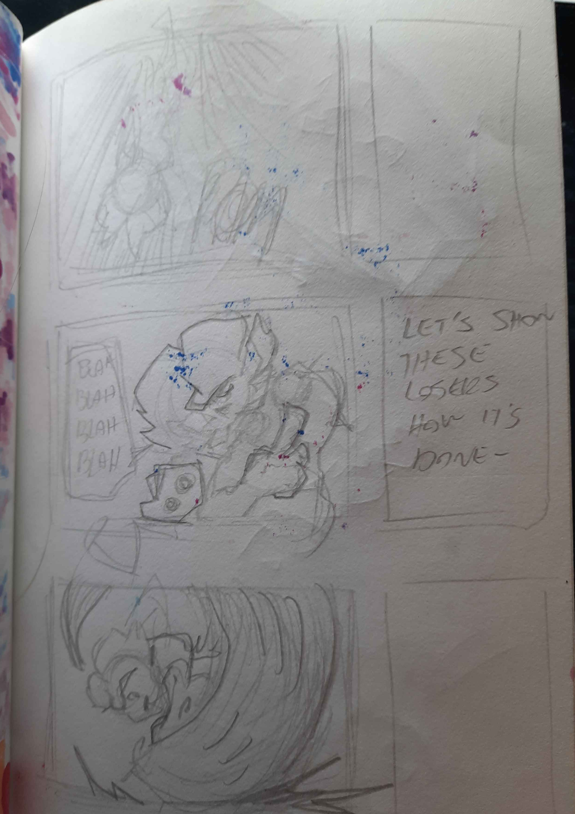
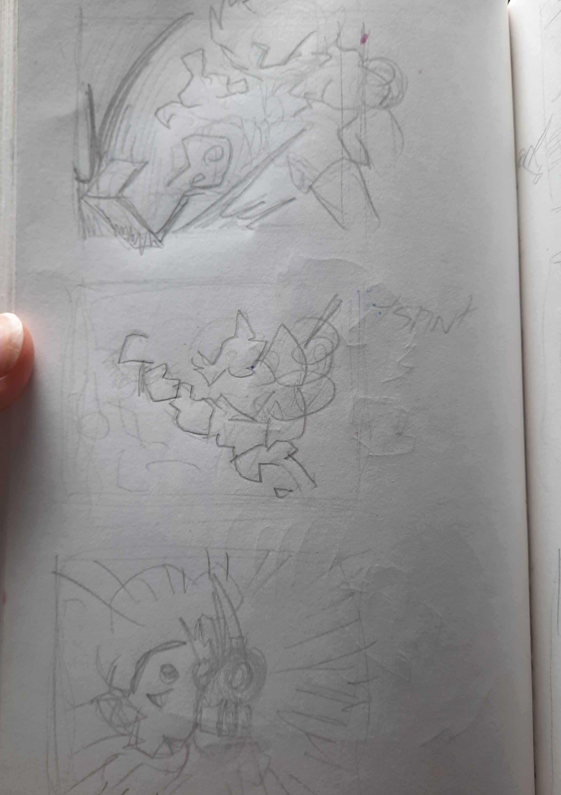
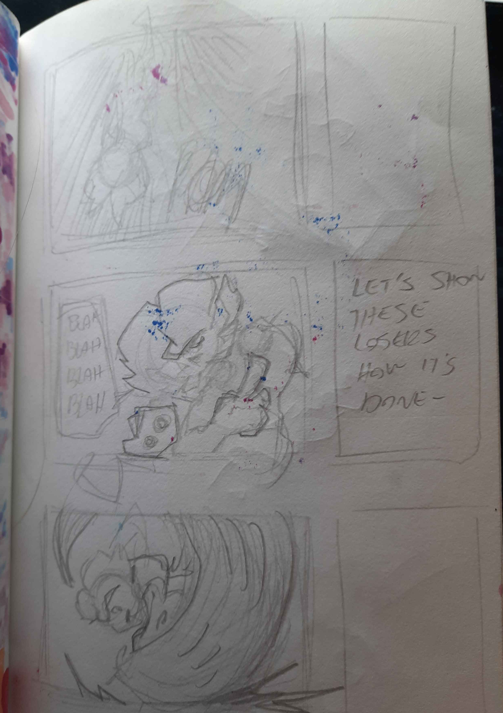
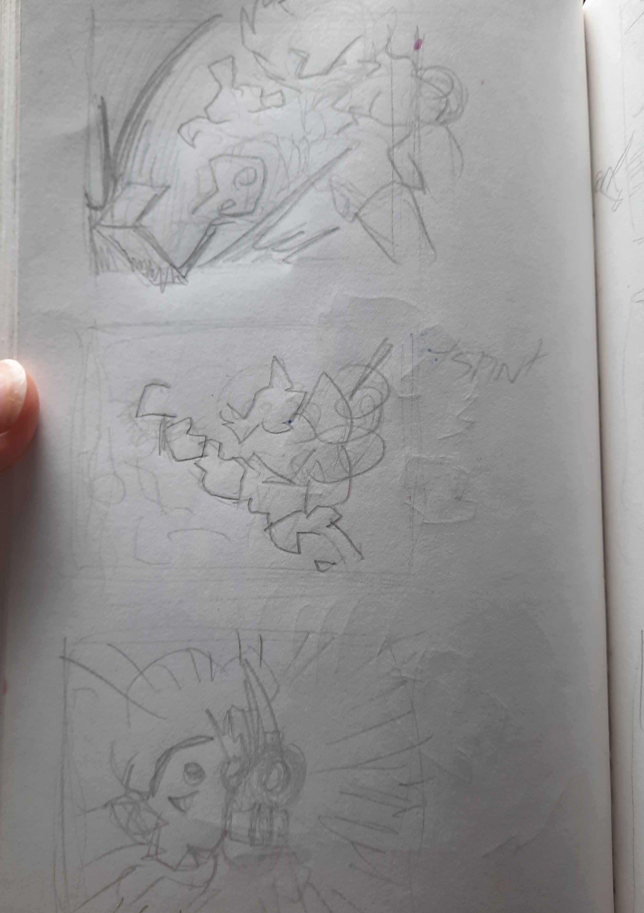
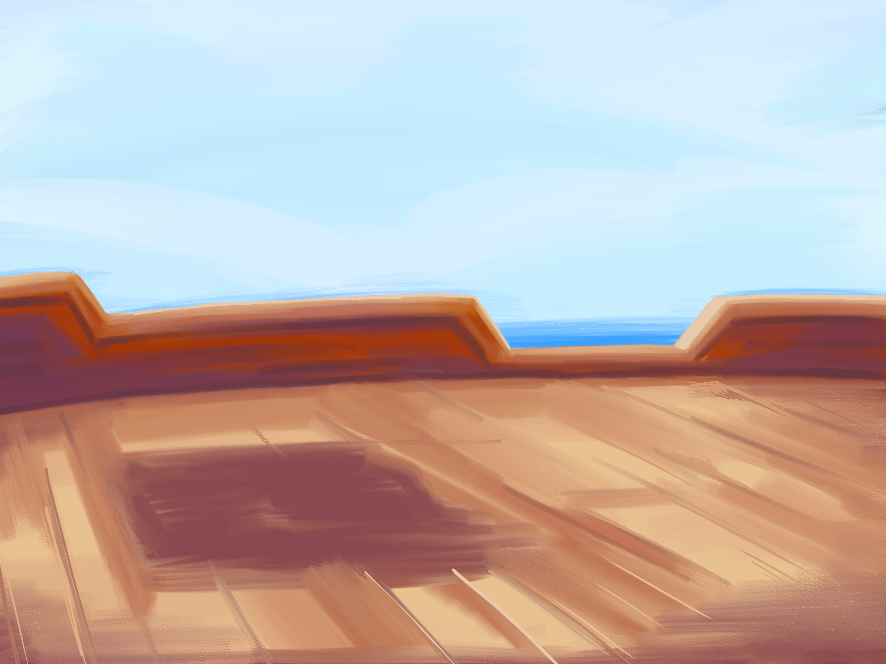
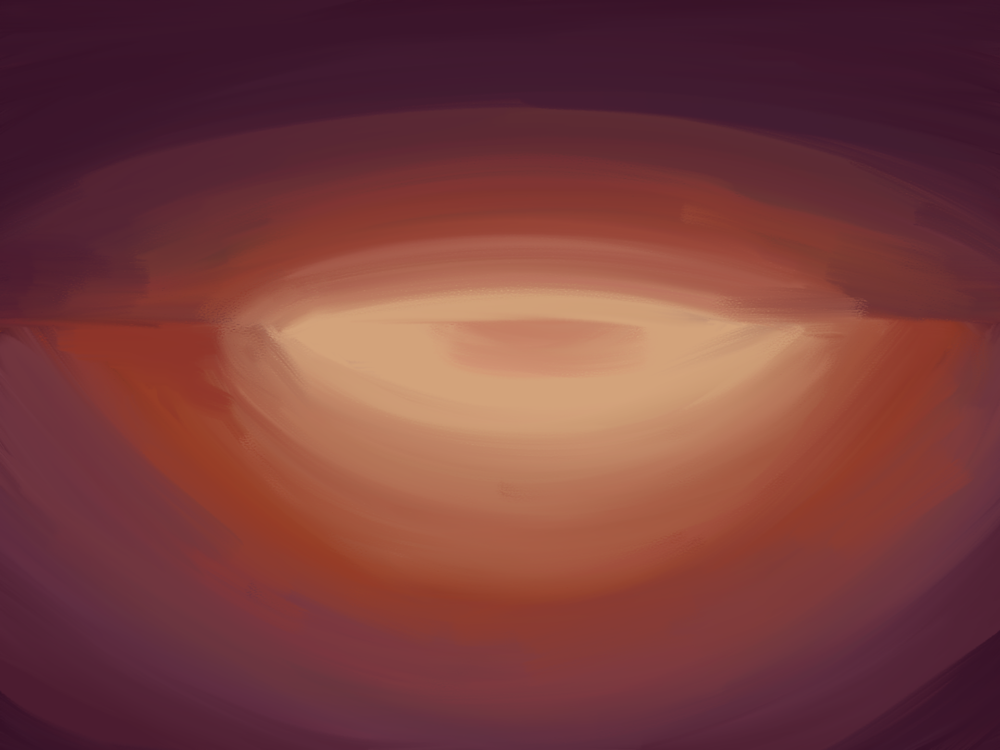
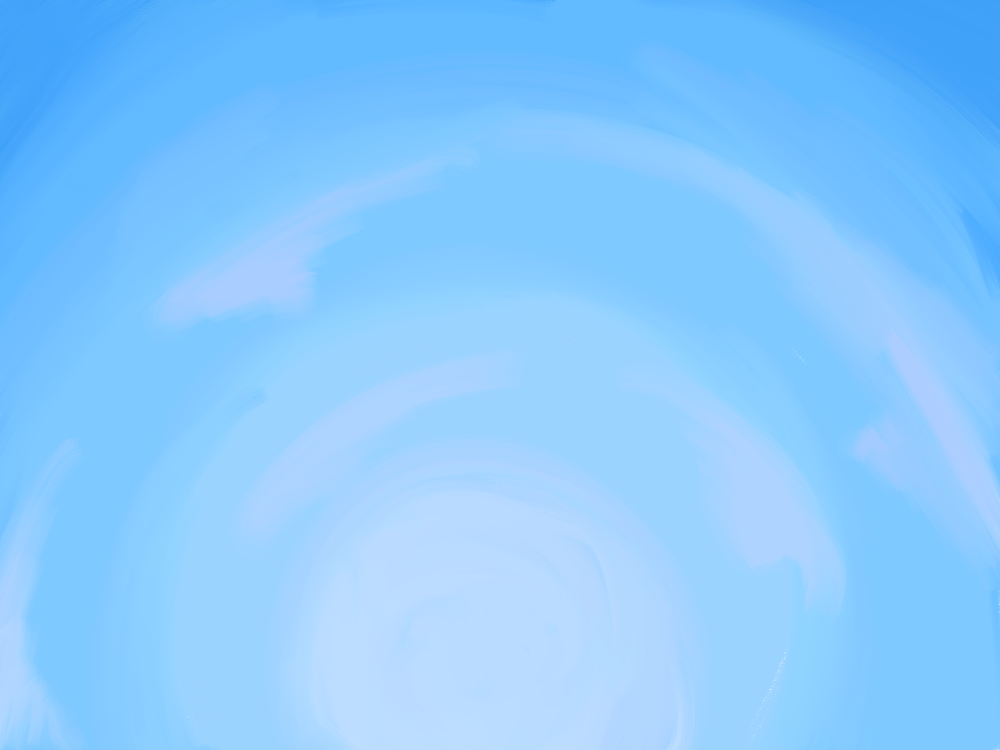

Pirate Cat Short
Een korte animatie gemaakt voor de basisopleiding media bij HKU.
Proces
Het storyboard.
  
  
Dit storyboard heb ik verwerkt tot een equivalente animatic, deze animatic is daarop verder uitgebreidt tot een ruwe animatie.
De ruwe animatie is vervangen met netjes lijnwerk, en vervolgens ingekleurd en schaduwen op toegepest
De achtergronden waren pas laat in het proces, en waren apart digitaal geschilderd.
  
Na enkele colour correcetion, en met hulp van een andere artiest voor audio was de animatie klaar.